Penny — build report
A chat-based spending companion for a US retail bank. An LLM reasons and chooses tools; Python computes every number. Built for the Zafin AI coding assignment.
1 · Executive summary
Penny answers natural-language questions about six months of transaction history. The design decision everything else follows from: the model never does arithmetic. It decides which question to ask; Python answers it.
| Claude decides | Python computes |
|---|---|
| which tool answers the question | every sum, average, percentage, ranking |
| which month, category, merchant | what counts as spending vs. a transfer |
| how to phrase it, and what to caveat | which charges are duplicates or outliers |
The second decision: the stream carries UI components, not tokens. Each line of the response is one complete, validated component, so the answer's first sentence renders while the chart beneath it is still being generated.
What it does well
- It refuses honestly. Asked about a savings goal, Penny says no goal exists in the data, then offers the run rate instead. Asked to pay a bill, she declines — and there is no tool that could do it, so the limit is structural rather than a prompt instruction.
- Its figures are checkable. Every number in the recorded transcript was verified against the raw dataset independently of the code that produced it.
- It degrades rather than breaking. Malformed model output is repaired where possible, and dropped visibly where not.
2 · User stories & functional coverage
All twelve stories from the brief are exercised, each as a case in the evaluation suite. Eleven are answered from data; one is declined on purpose.
| Story | Difficulty | Status | How |
|---|---|---|---|
| Spend on restaurants last month | easy | ANSWERED | get_spending_by_category |
| Top 3 spending categories | easy | ANSWERED | get_top_categories + pie chart |
| Show all my subscriptions | easy | ANSWERED | list_subscriptions + logo cards |
| Which merchant do I spend most at | easy | ANSWERED | get_top_merchants |
| Duplicate charges | medium | ANSWERED | detect_anomalies — same merchant + amount within 3 days |
| This month vs last month | medium | ANSWERED | compare_periods, flags comparability |
| Flag unusual transactions | medium | ANSWERED | outliers > 2σ within their own category |
| Average weekly grocery spend | medium | ANSWERED | denominator is the calendar period, not the transaction span |
| Coffee shop visits, with logos | medium | ANSWERED | find_transactions → merchant cards |
| How much of my income goes to food | hard | WITH CAVEAT | answered, but relays that income is only partly visible |
| Am I on track for my savings goal | hard | DECLINED | no goal exists in the data — offers income vs. spend and run rate |
| Predict end-of-month balance | hard | REFRAMED | projects spend; states plainly that a balance is not derivable |
Verbatim: how Penny handles the savings-goal question
“There's no savings goal stored in this data — I have transaction history only, so I can't tell you whether you're on track against a target, and I can't see a balance either. What I can tell you: you've spent $9,700.46 so far in July through day 28, a run rate of $346.44/day, which straight-lines to about $10,739.80 by month end. That's roughly $999 below your $11,739.00 average across the five complete months from February to June… The projection assumes the last three days look like the first 28, which is a weak assumption around rent and payday. And no income credits at all appear in July — your salary clearly lands in another account, so I genuinely can't compute what you saved, only what you spent.”
Note the baseline: five complete months, February to June. The dataset
opens on 2026-01-28, so January holds four days. An earlier build averaged that
stub in as though it were a whole month, which pulled the baseline down to
$9,846.26 and reported July as $893.54 above average — the opposite of
the truth. is_month_fully_covered() now requires a month to be
covered at both edges before it can join a baseline, and two regression tests
pin it.
Recorded live in docs/demo-transcript.md.
3 · Tech stack
Agent runtime
LangGraph StateGraph with
create_agent (ReAct) as one node. Middleware:
ModelCallLimitMiddleware plus a custom ToolCallValidator.
LLM
Anthropic API direct —
claude-opus-5, adaptive thinking, effort per purpose, prompt
caching on the stable prefix.
Backend
FastAPI + uvicorn, single async worker.
Streaming via StreamingResponse over chunked transfer.
Client
Vanilla HTML/CSS/JS in a CSS phone frame. No build step. Charts are hand-rolled inline SVG — no chart library.
Data
Pydantic-validated JSON repository read once
at startup, behind a TransactionRepository port.
Quality
159 tests (stdlib unittest,
no key, no network), Ruff lint + format, GitHub Actions, Dockerfile.
Deliberate omissions
- No chart library. Six SVG renderers cost less than a dependency and render identically in a screenshot.
- No DI framework. A 113-line composition root wires eight
singletons.
dependency-injectorwould be more machinery than the problem has. - No SSE or WebSocket. Chunked NDJSON needs no long-lived connection, survives proxies, and maps one line to one enum case on a native client.
4 · Backend components
| Component | Responsibility | Why it exists |
|---|---|---|
InsightService | every figure Penny states | one place where arithmetic happens, so it can be tested exhaustively |
| Tool catalog + registry | 10 schemas, validate then dispatch | single source of truth; LangChain adapters are generated from it |
PromptAssembler | versioned 3-part prompt | cache breakpoint after the stable prefix; version lands in every audit row |
PennyChatRuntime | the LangGraph workflow | interleaves tool execution with component extraction |
StreamingResponseHandler | raw text → validated components | shared by chat and greeting, so tolerance and validation exist once |
| Tolerant JSONL extractor | brace-counted parsing | models drop separators and emit stray prose; a naive split loses the turn |
| Component contract | server-side validation | a broken widget must never reach the client |
| Session repository | turns, 30-min TTL | history server-side, so a client cannot forge an earlier turn |
| Audit sink | append-only, fire-and-forget | compliance must never sit in the customer's latency path |
| Telemetry | OTel spans + stream metrics | TTFT, TTFC, tool durations, empty-response detection |
The guards, and what each prevents
| Guard | Prevents |
|---|---|
ModelCallLimitMiddleware | a runaway ReAct loop — ends the turn instead of raising |
ToolCallValidator | hallucinated tool names and malformed arguments |
| request-scoped tool cache | paying twice for the same tool call in one turn |
| tolerant JSONL parser | one malformed line destroying an entire answer |
| component validation | an invalid chart or table reaching the UI |
ToolCallValidator returns the refusal as a tool result
rather than raising, so the model can read “that tool does not exist, here are
the ones that do” and recover inside the same turn.
Data pipeline — Task 2
This is the section the whole agent rests on: clean data in, accurate answers out. Two decisions in it were forced by the dataset rather than chosen.
The dataset does not match its own description
The brief describes the provided file as “~310 transactions across four
columns — transaction_description, amount,
date, and type (credit/debit)”. The file that shipped
is not that file.
| Brief says | File actually contains | Consequence |
|---|---|---|
| ~310 transactions | 300 rows | none — cosmetic |
| four columns | three: transaction_description, amount, date | — |
type (credit/debit) | absent; every amount is positive | material — see below |
| “about six months” | 2026-01-28 → 2026-07-28, 181 days (5.9 months) | accurate |
| “income such as salary deposits” | 2 payroll deposits totalling $4,379.47 | thin — see below |
type and every amount positive, the naive read is that all 300 rows
are spending. That would fold two salary deposits and five inbound transfers into
the spending total — inflating it by roughly $7,500 and corrupting every
category share, every monthly comparison and the income ratio. So
direction is inferred at enrichment from the
descriptor, and Transfers and Income are excluded from
spend by a domain predicate rather than by a filter at each call site.The consequence is visible in the recorded transcript: only 2 of 300 rows are Income-category credits, so Penny refuses to present an income-versus-spending ratio as a real savings rate and says why — the salary is almost certainly paid into another account. The caveat travels attached to the number, not left to the model's discretion.
Resolve descriptors, not transactions
The naive pipeline sends all 300 rows to the model. This one collapses them to distinct descriptors first, resolves those, then applies the result back across every row.
300 → 195
rows to model decisions, by collapsing
digit runs only. WALMART … 4471 and WALMART … 8123 are
the same merchant; no brand text is ever altered, so the merge is lossless.
Cached
The resolved catalog is written to
data/merchant_catalog.json and reused, so a re-run costs nothing.
--refresh re-asks the model.
Schema-constrained
category is a
Literal over a closed list, so the model cannot invent
Restaurants alongside Dining and silently split every
GROUP BY.
That is not a micro-optimisation — merchant identity is a property of the
descriptor, not of the transaction. A bank re-deriving
SQ *BLUE BOTTLE on every one of billions of rows is paying
repeatedly for an answer it already has.
Coverage produced
| Field | Coverage | Purpose |
|---|---|---|
merchant | 300 / 300 | customer-facing name |
category | 300 / 300 | closed list of 16 |
direction | 300 / 300 inferred | 7 credits (2 Income, 5 Transfers) |
logo_domain | 265 / 300 | merchant logos in the UI (bonus A) |
city / region | 136 / 300 | location data, where the descriptor carries it |
is_recurring | 59 / 300 | subscription candidate, later confirmed against observed cadence |
confidence | 300 / 300 | self-reported, for spot-checking |
The prompt, verbatim, and the reasoning behind each field:
docs/enrichment-prompt.md.
is_recurring from the merchant's nature; the
insight layer confirms it against behaviour — at least two charges, with a
median gap that maps to a cadence. So a one-off purchase at a subscription
merchant is never reported as a subscription.5 · System architecture

application/ports/ seam on its way to the adapter, because that is
the real call path: InsightService reaches the dataset through
TransactionRepository, never a concrete class. Two loops close:
the runtime asks prompt assembly for the three-part system prompt and sends it
on itself, and turns and audit records are written after the last byte then
read back by the initializer on the next turn, which is why a client cannot
forge history. Every figure the customer sees is computed in
InsightService, in deterministic Python, never by the model. The
olive chain along the bottom starts from the CSV supplied with the brief, runs
once, is committed, and never touches the request path.The rule is enforced as a test, not a convention:
tests/architecture/test_dependency_rule.py asserts that
domain/ imports no third-party package and that
application/ contains no framework import. A refactor that violates
the layering fails CI.
6 · End-to-end flow
One turn, from keystroke to rendered component. Timings are from the recorded live run.

7 · Architecture components — what was actually built
| Layer | Modules | Contents |
|---|---|---|
penny/domain/ | 5 | Transaction with invariants, Period value object, closed taxonomy, errors carrying HTTP status. Standard library only. |
penny/application/ | 25 | ports (Protocols) · insights split by concern · component contract + presenters · greeting facts · prompt assembly · tool catalog and registry |
penny/infrastructure/ | 21 | LangGraph runtime · streaming handler + tolerant JSONL · model factory · persistence · telemetry · settings and model registry |
penny/presentation/ | 6 | FastAPI app factory · routes · identity middleware · request/response schemas |
penny/composition/ | 2 | the only module allowed to name a concrete class |
eval/ | 8 | three-phase evaluation: dataset, simulate, judge, analyze, report, runner |
web/ | 3 | phone frame, 12 component renderers, JSONL tokenizer |
tests/ | 10 | 159 tests: domain, application, infrastructure, presentation, architecture rules |
The component contract
Twelve component types plus an unsupported fallback. Every line of
every response conforms to one, or is replaced:
| Component | Required fields | Produced by |
|---|---|---|
chat-response | body | model |
table | headers, data | model |
ordered-list / unordered-list | items | model |
bar-chart / line-chart / pie-chart | valueTitle, labels, data | model |
suggested-user-intents | intents | model |
transaction-list | transactions | server — from tool output, so merchant names cannot be mistyped |
smart-loading | body | server — fills the gap while tools run |
try-again-error · feedback · done | — | server |
unsupported | reason | server — validation failure, or newer than the client |
The published OpenAPI document carries this as a discriminated union, so a consumer can generate a typed client. A test asserts the published discriminators equal the contract's keys, so the docs cannot drift from the wire.
8 · Design principles and considerations
Caveats travel with the data, not with the model's discretion
Tools that return an estimate ship a caveat or method
string in the payload, and the prompt requires Penny to relay it. Honesty is
enforced at the data layer — the model cannot quietly drop the qualifier on a
projection, because the qualifier arrives attached to the number.
The boundary is structural, not textual
Penny cannot move money because no tool exists that could. A prompt instruction can be argued with; an absent capability cannot. The tool catalog is scanned by the validation suite for action verbs.
Anchored to the data, not the wall clock
The dataset ends 2026-07-28. Answering “this month” against the real calendar would return an empty result set and look like a bug. The data context tells the model which month is the last complete one and marks July partial — so totals are never quietly understated, and a month-over-month comparison against a partial tail is flagged.
Denominators are periods, not transaction spans
A weekly average divided by the gap between the first and last matching transaction silently changes with the data: two grocery trips in one week yields a “weekly average” over one week. The denominator is the calendar window, capped at the days of data actually available.
Tolerate imperfect model output
Models drop the newline separator, emit stray prose between objects, leave raw
newlines inside strings, and get truncated mid-object. Splitting on
\n and calling json.loads loses the whole turn. The
parser brace-counts, repairs in-string control characters, discards what it
cannot parse, and retains the incomplete tail for the next delta.
Cost discipline as a design property
The prompt's stable prefix carries a cache breakpoint, so follow-up turns read
it from cache. Enrichment resolves distinct descriptors rather than rows
— 300 rows become 195 model decisions — and caches the result, so a re-run costs
nothing. Effort is set per purpose: medium for chat,
low for the greeting, which only rephrases numbers Python computed.
Trade-off accepted: sentences, not tokens
Because a chunk is a complete component, text arrives per-sentence rather than
per-token. That is the price of structured output, and smart-loading
is what covers the wait. A token-streamed markdown blob would feel faster and
render nothing structured.
9 · Plan for integration in a real mobile banking app
Native client
The phone frame here is a CSS mock, but the wire contract is already what a
native client wants: newline-delimited JSON where each line is a complete UI
component. A SwiftUI client consumes the chunked body, buffers it in an
actor-isolated tokenizer that splits on \n, and decodes each line
polymorphically on the component discriminator into an enum — one
case per row of the contract, plus .unsupported(raw) so a component
added after the app shipped renders as a placeholder instead of dropping the
turn.
- Actor-isolated buffer so parsing never races the UI; view models on the main actor; payload models
Sendable. - Swift Charts for bar/line/pie; cached merchant logos; no markdown parsing on device.
- Cancellation must reset the tokenizer buffer, or the next turn starts mid-object.
- Dynamic Type and VoiceOver on every component, including chart summaries.
Scalability
- Sessions are per-process today, so scale is container count, not worker count. Move to a shared store (DynamoDB single-table,
PK=USER#{poid},SK=SESSION#{id}/#TURN#{ts}, TTL attribute) and the app becomes stateless. The zero-padded sort key is already in place. - Enrichment becomes a streaming pipeline over the bank's ledger — Batch API for backfill, per-transaction on the authorisation feed. The descriptor-level cache is what makes this affordable at billions of rows.
- Insights move from an in-process list to queries against a columnar store — one new class behind the existing
TransactionRepositoryport.
Security
- The prototype verifies no tokens. It reads
Authorizationandext-user-profile-compressed, derives a pseudonymous id and scopes sessions to it — a session id belonging to another customer is treated as absent — but there is no identity provider behind it. Real JWT + EUP verification is the first thing a deployment must add. - No PAN or account identifier may enter a prompt; tokenise before the LLM boundary.
- The tool layer binds every query to the authenticated customer, so a prompt-injected request cannot cross accounts.
- Insights-only is enforced by the absent capability, not by prompt text.
Observability
- OTel instrumentation exists; point the exporter at a collector.
- Ship TTFT / TTFC and tool durations as SLIs with an error budget. Alert on
empty_responserate and on turns hitting the model-call cap. - Every audit record carries the prompt version, so a behaviour change six months from now is attributable to a revision rather than to “the model drifted”.
Quality gates
The evaluation suite is the release gate: run it before and after any prompt change and treat a Risk regression as a blocker. Ground truth is computed from the same insight service the agent calls, so “accuracy” means did it report what the data says.
Evidence & validation
Nothing in this report is asserted from memory. Each claim has an artifact.
| Artifact | What it proves |
|---|---|
docs/requirements-validation.md | every brief line checked against the running app; machine-generated, exits non-zero on failure |
docs/demo-transcript.md | seven live turns, 22 tool calls, verbatim |
eval/out/report.html | Big 3 scoring with judge + analyst, raw and FP-adjusted |
docs/API.md + openapi.json | the consumer contract, with client examples |
docs/enrichment-prompt.md | the Task 2 prompt, verbatim, and why it is schema-constrained |
| 159 tests | parser edge cases, contract validation, guards, sessions, layering rules |
Evaluation design
Three phases: simulate against the live agent,
judge every answer on Accuracy / Helpfulness / Risk with a cheap
model, then analyse only the low scores with a stronger model,
which labels each FALSE_POSITIVE or GAP.
Done, not done, and what I would do next
Complete and verified live
- All four core tasks; both bonus tracks.
- Enrichment: 300/300 rows — merchant 300, logos 265, location 136, recurring 59.
- Live agent: tool calling, multi-turn memory, streamed components, honest refusals.
- 159 tests, lint clean, layering enforced by test.
Built but not verified
Deliberately not built
| Not built | Why |
|---|---|
| Native iOS client | the brief asks for a phone mock, not a production native app |
| Deep links / agent-driven navigation | appears only in the reference video, and only to confirm an account action the brief rules out |
| DynamoDB, S3 WORM, ECS, Secrets Manager | needs an account and earns no marks; the ports are in place so each is one class |
| 70+ categories | 16 suffice for 300 rows; the brief requires “a spending category” |
Next, with more time
- Run the full 14-case eval. Only a 4-case smoke has run; the hard and refusal cases are where a real Risk number would come from.
- Fix one prompt weakness found in the transcript. A June-vs-May comparison rendered a single-series chart of May values with no indication which month they were — the format prompt explains multi-series charts but never says to use two series when comparing two periods.
- Make the
unsupportedplaceholder customer-safe. It currently shows developer text (“unknown component 'sankey-diagram'”). Keep the mechanism, log the reason, show the customer something neutral. - Verify the container. Build the image, run the health check, execute the CI workflow once.
- Widen enrichment coverage. 35 of 300 rows have no logo domain and 164 no location; a second pass over just those would lift both.